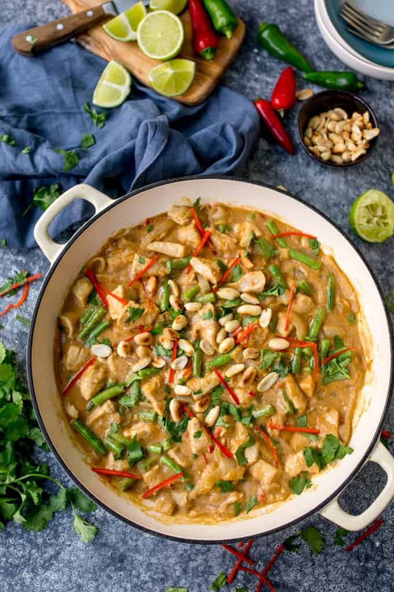

Peanut Butter Chicken

Description
Peanut Butter Chicken is a strange sounding but awesomely delicious dinner recipe that the whole family will love.
The flavorful peanut butter sauce for chicken is rich, creamy, and nutritious. It's an easy to make recipe that uses pantry-staple ingredients that's ideal for a quick, weeknight meal. You'll love it!
Ingredients
- 2 tbsp Vegetable Oil
- 8 Skinless Boneless Chicken Thighs, cut into chunks
- 1 Onion, finely chopped
- 2 Red Chillies, finely sliced
- 2 tsp Fresh Ginger, grated
- 100g Smooth Peanut Butter
- 400ml Coconut Milk
- 400g Can of Chopped Tomatoes
- Handful of Coriander
- Roasted Peanuts, to serve
- Cooked Basmati Rice, to serve
Method
- Step One
- Heat 1 tbsp of the oil in a deep frying pan over a medium heat. Brown the chicken in batches, setting aside once golden.
- Step Two
- Fry the onion for 8 minutes until softened. Then add the garlic, chilli and ginger and fry in the other 1 tbsp oil for 1 min. Add the garam masala and fry for 1 min more.
- Step Three
- Stir in the peanut butter, coconut milk and tomatoes, and bring to a simmer. Return the chicken to the pan and add the chopped coriander.
- Step Four
- Cook for 30 mins until the sauce thickens and the chicken is cooked through.
- Step Five
- Serve with the remaining coriander, roasted peanuts and rice, if you like.